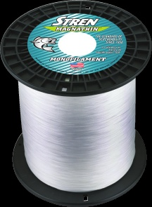

Stren MagnaThin Monofilament
Diameter chart, reel capacity & backing guide

MagnaThin is Stren's diameter-focused mono family. This guide preserves the 2016 US Clear filler specifications, including the manufacturer's 16 lb size. It does not borrow Original diameters or turn an unsupported 14 lb entry into 16 lb.
- Construction
- Monofilament
- Listed strengths
- 4-30 lb
- Line type
- Monofilament main line
Compare the diameter, not just the test label
MagnaThin is worth considering when you want a mono mainline and spool space matters. Its smaller published sizes can change a fill plan appreciably, but extra capacity is not itself a reason to choose lighter line. Match strength to the rod, lure and cover before comparing reels. The figures here describe a specific historical range and are not a promise of identical current stock or tested handling.
How much MagnaThin will fit?
Calculated estimates, not measured fills. Stop at the reel manufacturer's fill level even if some line remains.
Stren Magnathin diameter chart
2016 US MagnaThin Clear filler chart. The 14 lb legacy row is excluded; 16 lb is a separately verified row. Other colors and service-spool packages are not silently combined with these offerings.
| Strength | Inches | mm | Spools (yd) |
|---|---|---|---|
| 0.007 | 0.1778 | 330 | |
| 0.008 | 0.2032 | 330 | |
| 0.009 | 0.2286 | 330 | |
| 0.010 | 0.254 | 330 | |
| 0.012 | 0.3048 | 330 | |
| 0.013 | 0.3302 | 330 | |
| 0.016 | 0.4064 | 330 | |
| 0.018 | 0.4572 | 300 |
Choosing your MagnaThin strength
The 4-10 lb rows are the thinner part of this chart. They give you concrete diameter inputs for a light-line plan; the lowest number is not automatically the best choice for a compact reel.
At 12 and 16 lb, check both the diameter and the printed strength. The source lists 16 lb, not 14 lb. No interpolation or relabeling bridges that gap.
The 20 and 30 lb entries increase spool-volume demand substantially. Pick the rod and reel for the fishing load, then check whether the package provides your required working length.
No casting, sinking-speed or break-strength testing was performed for this guide.
Want a guided recommendation?
Continue in the Setup WizardSame pound test, different diameters
At your selected strength
Loading diameter comparisons...
What changes with another line?
Nearby diameters in the line database
| Line | Strength | Inches | Difference |
|---|---|---|---|
| Loading line database... | |||
Backing, working line & leaders
Start with the actual MagnaThin diameter
A reel's generic mono rating is only a reference capacity. Select the MagnaThin row so the calculation reflects this family rather than assuming all mono at one test strength has the same size.
Keep filler and service spools distinct
This chart uses Clear filler packages. The manufacturer image shows a service spool from the same family; it is not the default retail package. The catalog's service offerings are outside this chart.
Choose a continuous fill or a measured section
A full mono fill needs no separate anti-slip base. Backing is optional when you deliberately keep a shorter fresh section; allow enough line above its knot for casts, runs and retying.
Finish by the spool lip
Use even tension and follow the reel's fill clearance. A calculated amount is a planning estimate, not permission to overfill a spool that is already at its recommended level.
How Much Fits on These Reels?
Estimated full-spool capacity for the MagnaThin strength selected above, with no backing. These are calculated examples, not physical tests or recommendations for every pairing.
Loading capacity estimates...
MagnaThin questions, answered
Why is 16 lb listed instead of 14 lb?
The inspected official 2016 chart prints 16 lb. A pre-existing 14 lb record lacked matching official evidence, so it is excluded rather than renamed.
Can I substitute Stren Original's diameter?
No. MagnaThin is a distinct product family. Use the physical diameter verified for the chosen family and strength.
Does the image show the default filler package?
No. It is genuine archived manufacturer artwork of the MagnaThin service spool. The numeric chart and default length are explicitly limited to Clear filler packages.
Is this a current retail availability list?
No. It is a dated official specification reference. Check the label and length of the exact package being purchased.
Specifications & sources
Checked September 13, 2026 in the original Stren 2016 catalog archived by WesternBass. Inch diameters, Clear filler availability and the 30 lb length exception were visually verified. Millimeters are converted, not independently printed. Historical specifications and manufacturer artwork do not establish today's stock or unchanged formulation.
Calculations use the catalog's listed inch diameters. Published inch and millimeter values may differ slightly because of rounding.
- Stren 2016 manufacturer MagnaThin chart Visually inspected historical US Clear filler table; explicit 16 lb identity and 30 lb yardage exception.
- Manufacturer MagnaThin artwork Unmodified service-spool image from the same catalog's public asset manifest.